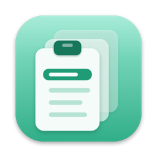

ClipNest
A clipboard history in your Mac's menu bar. Everything you copy, ready to paste again.
Getting started
Copy as usual. ClipNest keeps the text, images and files you copy. To paste something you copied earlier, press ⌃⌥⌘C in any app, or click the clipboard icon in the menu bar. Type a few letters to find it, then press Return. ClipNest pastes it into the app you were in.
Allow pasting
To paste into the app you're using, ClipNest presses ⌘V for you, which macOS only allows after you turn ClipNest on in System Settings → Privacy & Security → Accessibility. ClipNest uses this permission only to press ⌘V. Until it's allowed, choosing an item puts it on the clipboard, and you press ⌘V yourself.
Keyboard shortcuts in the history
↑ ↓ choose · Return or a click paste · ⌘1–⌘9 paste one of the first nine · ⌘P pin or unpin · ⌘⌫ delete · esc close.
Settings
Open Settings from the menu bar icon (⌘,) to change the shortcut, choose how many copies to keep (50 to 1,000; pinned items don't count), leave out copies made in apps you choose, and open ClipNest at login.
Common questions
Choosing an item doesn't paste it.
Turn ClipNest on in System Settings → Privacy & Security → Accessibility. If it's already on, turn it off and on again.
Something I copied isn't in the history.
ClipNest leaves out passwords that password managers mark as secret, copies made in apps listed in Settings, and everything copied while Pause Recording is on in the menu bar.
Where is my history kept?
Only on your Mac, in ClipNest's private storage. Clear History in the menu bar removes everything except pinned items; ⌘⌫ in the history removes one item.
Where did ClipNest go?
ClipNest lives in the menu bar and has no Dock icon. Opening it again from the Applications folder shows the welcome guide.
Contact
For help, bug reports or ideas, open a support request.